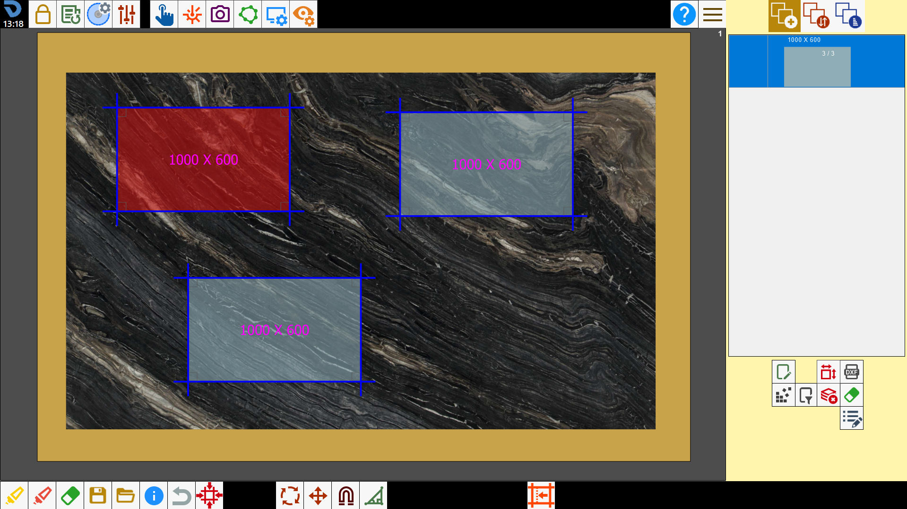
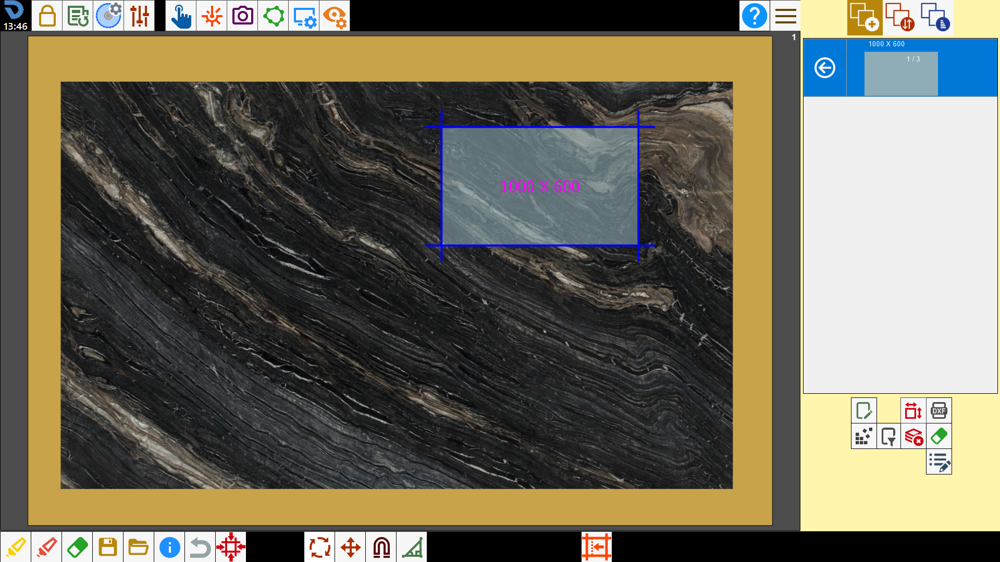
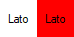
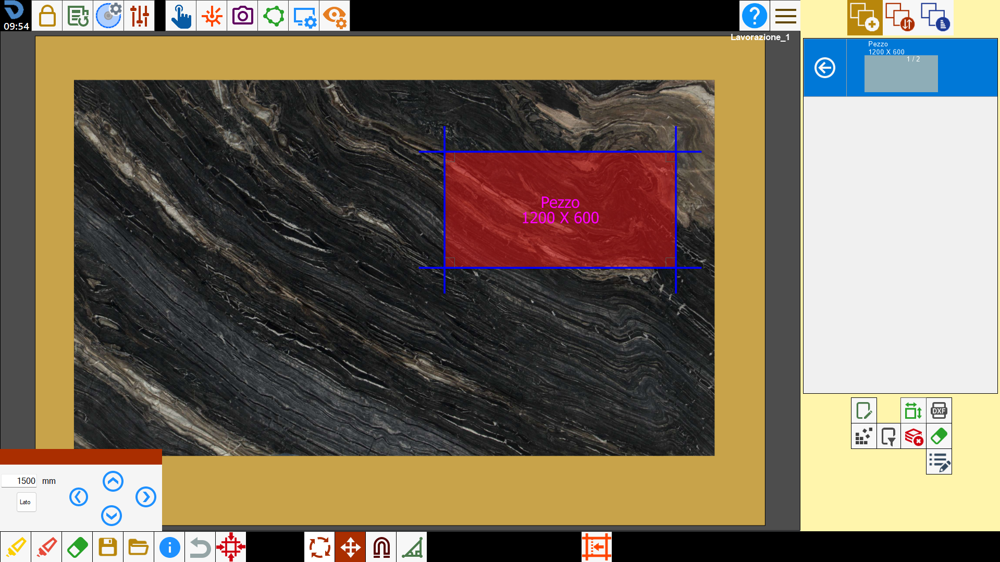
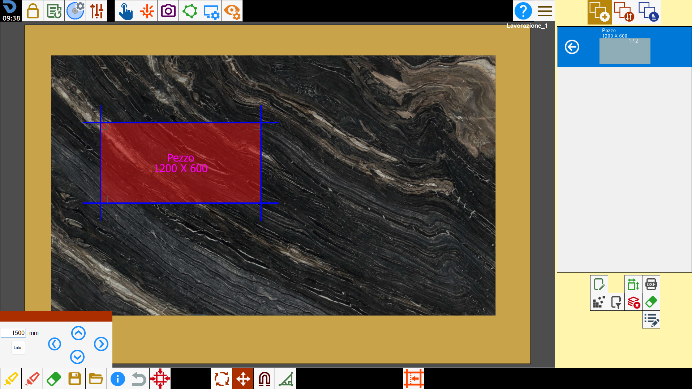
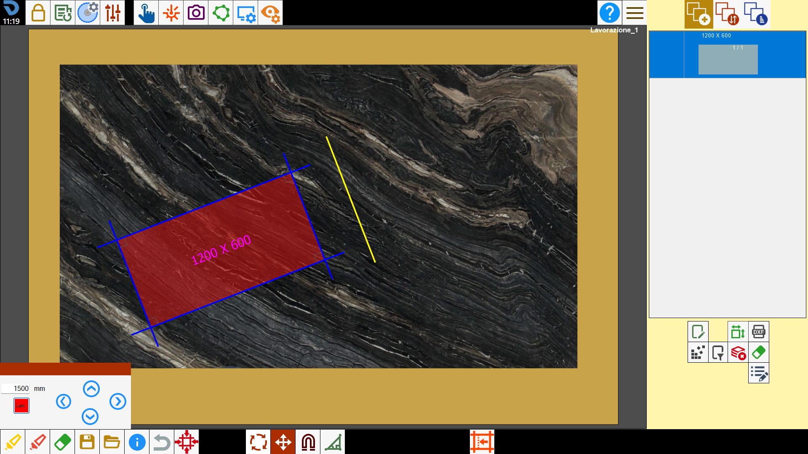
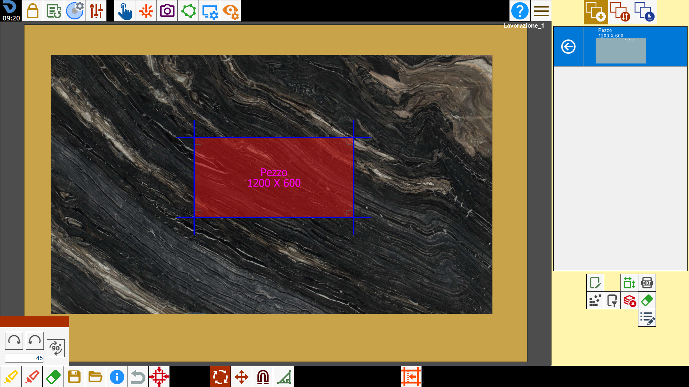

L’operatore può modificare il posizionamento dei pezzi sul banco tramite l’interazione sull’area di lavoro.

Funzioni
 | Selezione multipla |
 | Seleziona tutto |
Rimuovi pezzi | |
Muovi pezzi | |
Ruota pezzi | |
 | Annulla operazione |
 | Magnetizzare i pezzi |
 | Taglio inclinato |
 | Modifica pezzo commerciale |
Selezionare i pezzi
Per selezionare un pezzo, premere al suo interno. Lo sfondo dei pezzi sarà di colore azzurro quando non sono selezionati, di colore rosso se selezionati.

Selezione multipla
Premendo il pulsante si attiva la modalità selezione multipla. In questa modalità si potranno selezionare più pezzi contemporaneamente. Per deselezionare un pezzo, premere all’interno di un perimetro già selezionato.

Selezionare tutti i pezzi
Con questo pulsante è possibile selezionare o deselezionare contemporaneamente tutti i pezzi presenti sull’area di lavoro.

Rimuovere i pezzi
Premendo sul pulsante, i pezzi selezionati vengono rimossi dall’area di lavoro e vengono inseriti nuovamente nella lista dei pezzi, per renderli disponibili in un secondo momento.

Spostare i pezzi
Per spostare il pezzo selezionato, tenere premuto all’interno del perimetro e trascinarlo sull’area di lavoro.
In alternativa è possibile utilizzare il pannello per lo spostamento con frecce direzionali.

Questa funzione viene applicata a tutti i pezzi selezionati. Quindi è possibile muovere più pezzi contemporaneamente.
Pulsanti
 | Frecce direzionali |
 | Spostamento lungo l’asse del lato |
Muovere i pezzi lungo gli assi classici
Si desidera applicare al pezzo uno spostamento di 1500 mm verso sinistra.


Muovere i pezzi lungo l’asse del lato
Si desidera applicare al pezzo uno spostamento di 1500 mm verso sinistra rispetto all’asse del lato del pezzo.
Per fare ciò il pulsante relativo deve essere attivato.


Ruotare i pezzi
Per ruotare i pezzi selezionati, tenere premuto all’esterno del perimetro e trascinarli sull’area di lavoro.
In alternativa è possibile utilizzare il pannello per la rotazione con angoli determinati.

Questa funzione viene applicata a tutti i pezzi selezionati. Quindi è possibile ruotare più pezzi contemporaneamente.
Pulsanti
 | Rotazione oraria |
 | Rotazione antioraria |
 | Rotazione 90_ |
Applicare rotazione
Si desidera applicare al pezzo una rotazione di 45 gradi in senso orario.


Annulla operazione
Questa funzione serve per annullare l’ultima operazione eseguita.
Per esempio se l’operatore sbaglia a cancellare un pezzo, schiacciando questo pulsante può tornare indietro a prima che eliminasse il pezzo.
Non esiste uno storico delle modifiche apportate ma se viene schiacciato più volte il pulsante vengono annullate più operazioni.